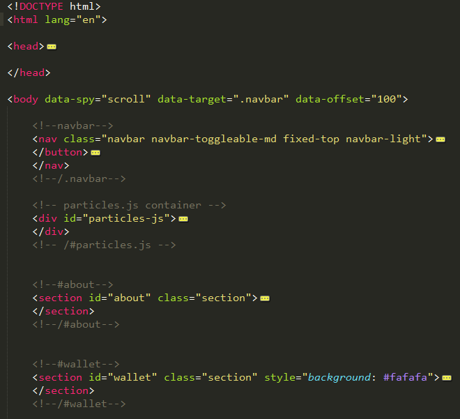

Created: 5/5/2018
By: CodeCorns
Email: codecorns@gmail.com
Thank you for purchasing my theme. If you have any questions that are beyond the scope of this help file, please feel free to email via my user page contact form here. Thanks so much!
This theme is a fixed layout with two columns. All of the information within the main content area is nested within a div with an id of "primaryContent". The sidebar's (column #2) content is within a div with an id of "secondaryContent". The general template structure is the same throughout the template. Here is the general structure.
If you would like to edit the color, font, or style of any elements in one of these columns, you would do the following:
#primaryContent a {
color: #someColor;
}
If you find that your new style is not overriding, it is most likely because of a specificity problem. Scroll down in your CSS file and make sure that there isn't a similar style that has more weight.
I.E.
#wrap #primaryContent a {
color: #someColor;
}
So, to ensure that your new styles are applied, make sure that they carry enough "weight" and that there isn't a style lower in the CSS file that is being applied after yours.
I'm using two CSS files in this theme. The first one is a generic reset file. Many browser interpret the default behavior of html elements differently. By using a general reset CSS file, we can work round this. This file also contains some general styling, such as anchor tag colors, font-sizes, etc. Keep in mind, that these values might be overridden somewhere else in the file.
The second file contains all of the specific stylings for the page. The file is separated into sections using:
/* === Header Section === */
.navbar {
padding-top: 20px;
padding-bottom: 20px;
background: -webkit-gradient(linear, left top, left bottom, from(rgba(255, 255, 255, 0)), to(rgba(255, 255, 255, 0.25)));
background: -webkit-linear-gradient(rgba(255, 255, 255, 0), rgba(255, 255, 255, 0.25));
background: -o-linear-gradient(rgba(255, 255, 255, 0), rgba(255, 255, 255, 0.25));
background: linear-gradient(rgba(255, 255, 255, 0), rgba(255, 255, 255, 0.25));
}
/* === Main Section === */
#particles-js {
width: 100%;
height: 100%;
position: relative;
background-color: #FFBF29;
/* background-image: url('');*/
background-size: cover;
background-position: 50% 50%;
background-repeat: no-repeat;
}
/* === Footer === */
.footer {
padding: 100px 0;
background: #333333;
color: #ccc;
}
etc, etc.
If you would like to edit a specific section of the site, simply find the appropriate label in the CSS file, and then scroll down until you find the appropriate style that needs to be edited.
Any images that are placed within the blog section have 5px worth of padding and a light bluish background. If you would like to edit the display of these images, find the following section in the style sheet:
#primaryContent #blog img {
change styles here:
}
This theme imports three Javascript files.
window.addEventListener('load', function(){
var allimages= document.getElementsByTagName('img');
for (var i=0; i
I've used the following images, icons or other files as listed.
Once again, thank you so much for purchasing this theme. As I said at the beginning, I'd be glad to help you if you have any questions relating to this theme. No guarantees, but I'll do my best to assist. If you have a more general question relating to the themes on ThemeForest, you might consider visiting the forums and asking your question in the "Item Discussion" section.
CodeCorns